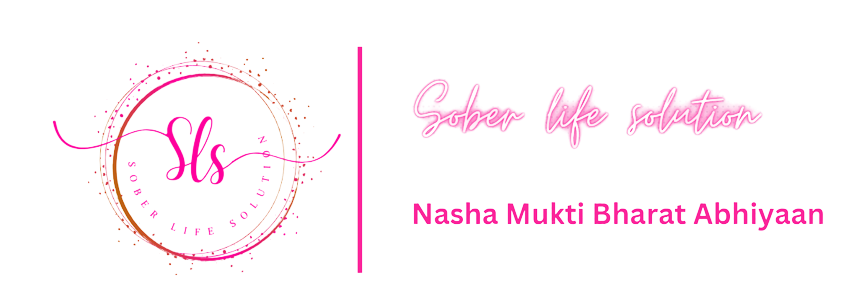
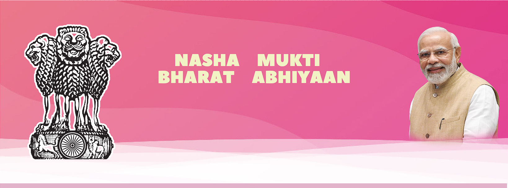

The Minister for Social Justice & Empowerment Shri Thawaarchand Gehlot
launched the website for the Nasha Mukt Bharat Abhiyaan (NMBA) on the
occasion of International Day Against Drug Abuse and Illicit Trafficking
on 26 June 2021, which isobserved worldwide to strengthen action and
cooperation in achieving the goal of a sustainable world free of substance
abuse. The entire world is facing the menace of drug addiction which has a
devastating impact on the addict, individual, family and a large section
of society.
The launch of Nasha Mukt Bharat Abhiyaan (NMBA) is for 272
Districts across 32 State/Union Territories that have been identified as
the most vulnerable in terms of usage of drugs in the country. These
vulnerable districts were identified on the basis of findings from the
Comprehensive National Survey and the inputs provided by the Narcotics
Control Bureau (NCB). According to the National Comprehensive Survey
conducted by the Ministry of Social Justice and Empowerment, there are
more than 60 million drug users in the country of which a large number of
users are in the age group of 10-17 years.
OBJECTIVES
Nasha Mukt Bharat
Abhiyaan intends to reach out to the masses and spread awareness about
substance abuse through various activities like: - Awareness generation
programmes Focus on higher educational Institutions, university campuses
and schools.
- Reaching out to the Community and identifying dependent
population
- Focus on counselling and treatment facilities in hospitals and
rehabilitation centres that have been geo-tagged
- Capacity building
programmes for service providers
INITIATIVES
The Ministry of Social
Justice and Empowerment has been mandated to reduce drug demand. It
coordinates and oversees all aspects of drug abuse prevention including
assessment of the extent of the problem, preventive action, treatment and
rehabilitation of addicts, dissemination of information, and public
awareness and is mandated to run de-addiction centres.
Nasha Mukt Bharat
Abhiyaan is operational with the involvement of more than 500 voluntary
organizations across the country, which are assisted financially under the
National Action Plan for Drug Demand Reduction (NAPDDR) scheme of the
Ministry of Social Justice &
EMPOWERMENT
These NGOs have been actively
involved in the implementation of Drug-Free India campaign. Nearly 8000
youth volunteers and outreach workers of these institutions/organizations
have gone from door to door, village to village and nearby localities,
etc. to educate the people about the ill effects of drug abuse and have
assisted in the rehabilitation of victims of substance abuse. The Nasha
Mukt Bharat Abhiyaan website provides detailed information about the
Abhiyaan and its activities, gives glimpses through the Photo & video
gallery, provides IEC resource material and information on the
institutions set up by the Ministry with the aim of Drug Demand reduction.
INSTITUTIONS
The Ministry of Social Justice and Empowerment supports organizations that work for preventive education & awareness generation on substance abuse, capacity building, treatment and rehabilitation. These organizations are: